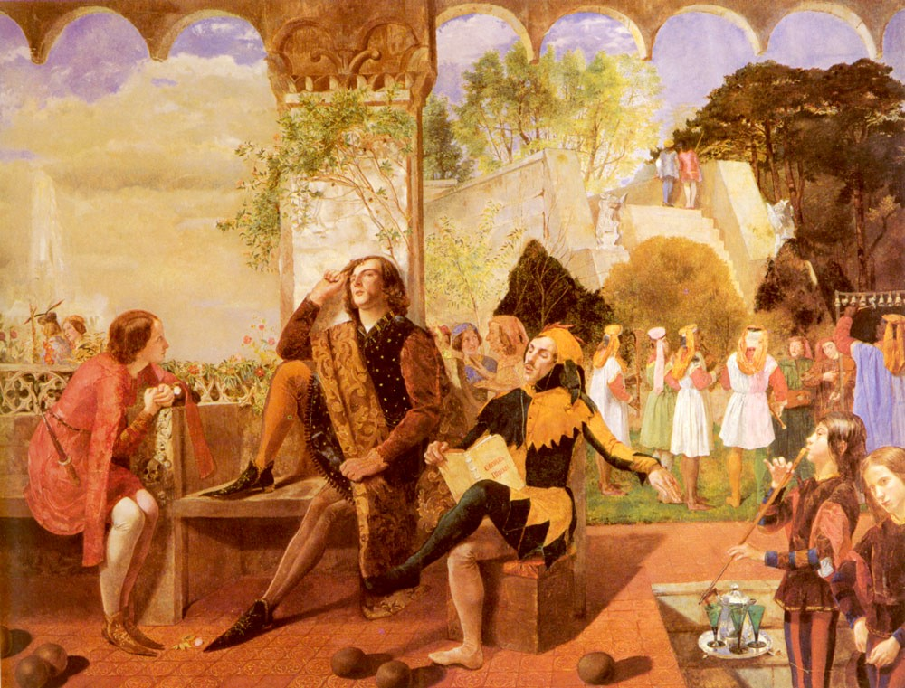
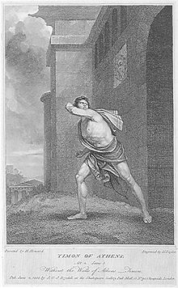

William Shakespeare
This song, from one of Shakespeare’s most popular comedies, is sung by the Clown or Fool character, Feste, at the end of Twelfth Night.
Some critics have expressed doubts over Shakespeare’s authorship of the song, which may have been written by Robert Armin (who played the fool characters in the original productions of many of Shakespeare’s plays) or may be an earlier song that predates the play. It uses wind and rain as symbols of life’s hardships, and thus concludes the poem on a somewhat bittersweet note.
William Shakespeare
Timon stands outside the wall of Athens and curses the city enthusiastically. He wishes death and destruction, plague and misfortune, upon the city's dwellers, and turns to the hills, where he expects to "find / Th'unkindest beast more kinder than mankind". His hatred for mankind will grow enormous, he predicts.Back at Timon's house, Flavius and several servants discuss what has happened. They're amazed that such a great house has fallen, and that none of them have yet gone into the wilderness with Timon to serve him. The servants must depart, and are sad.